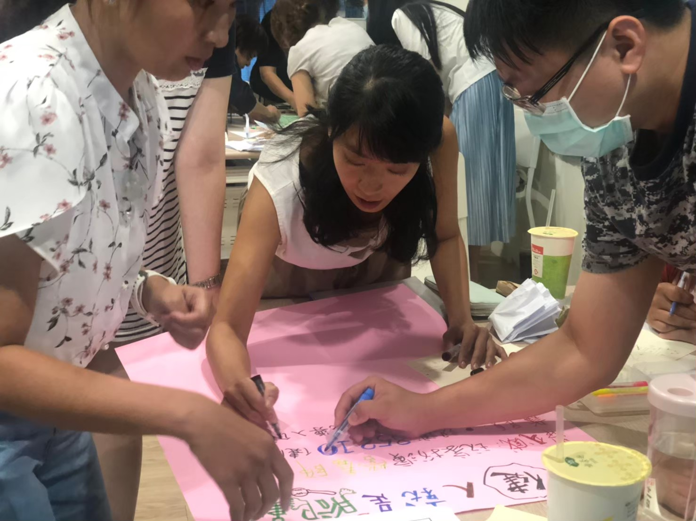
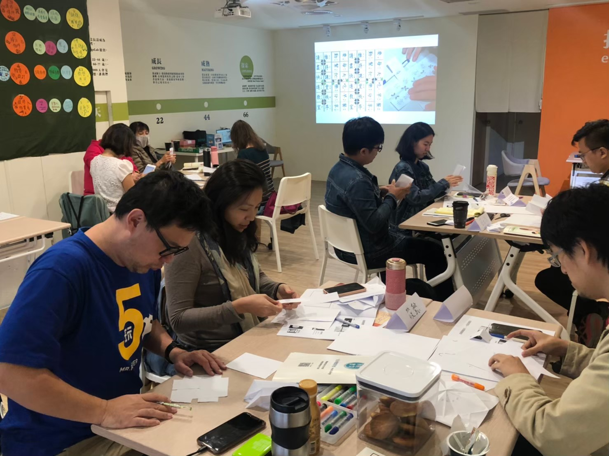
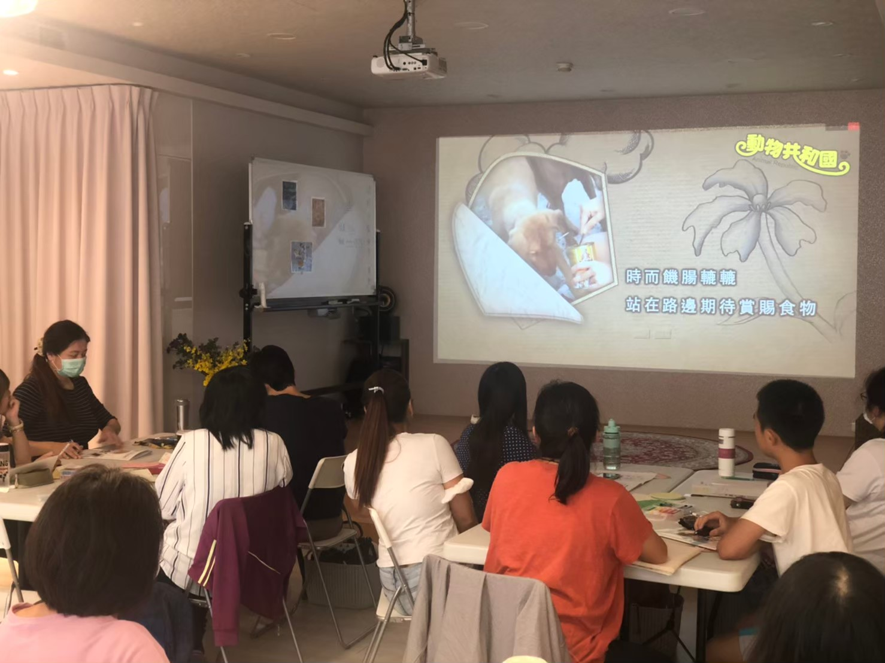
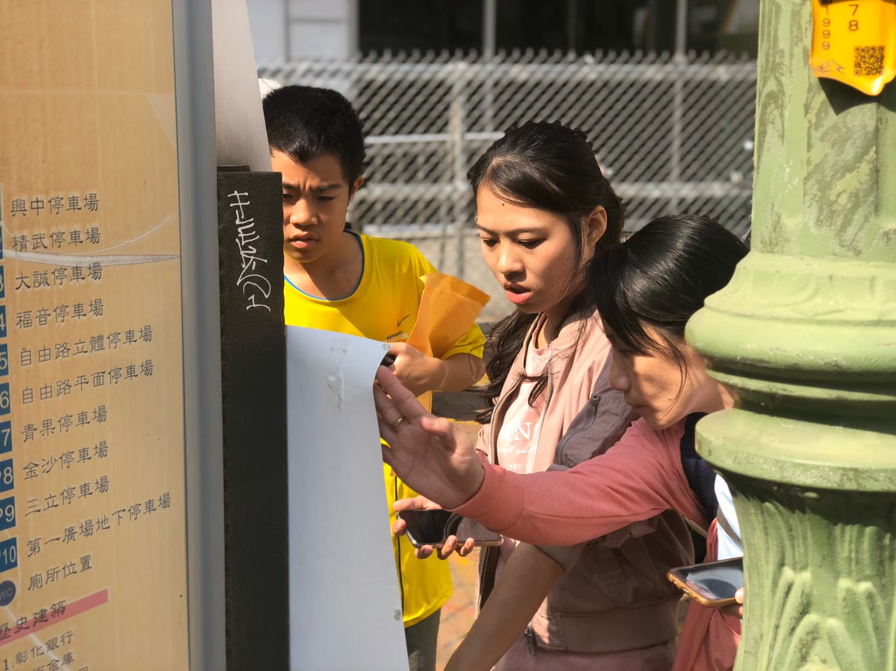
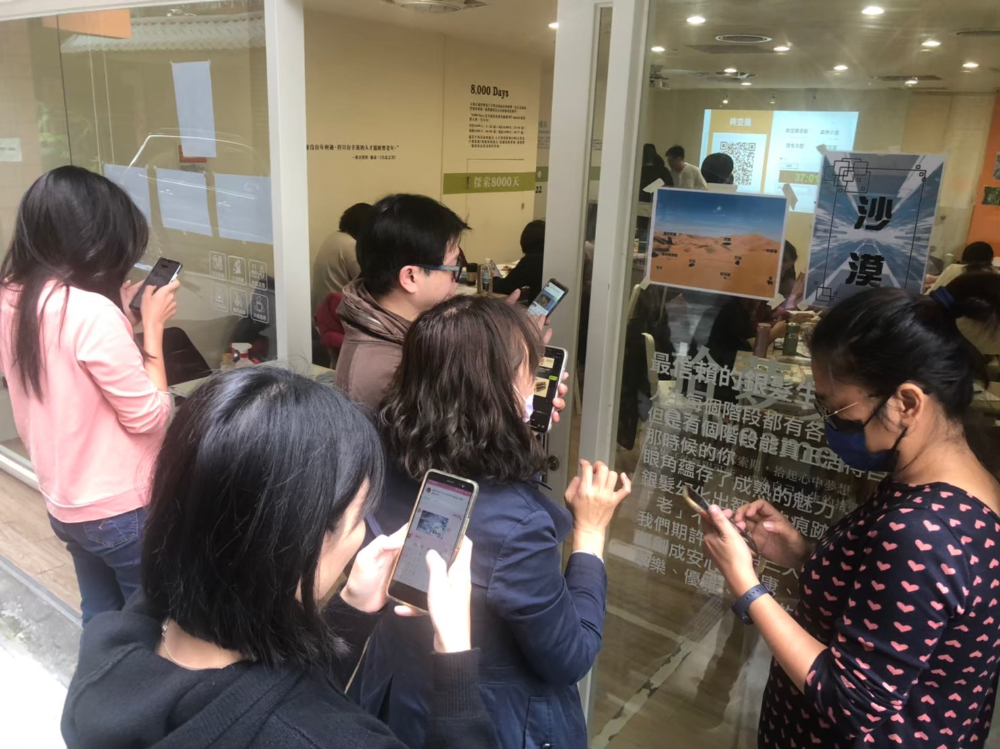
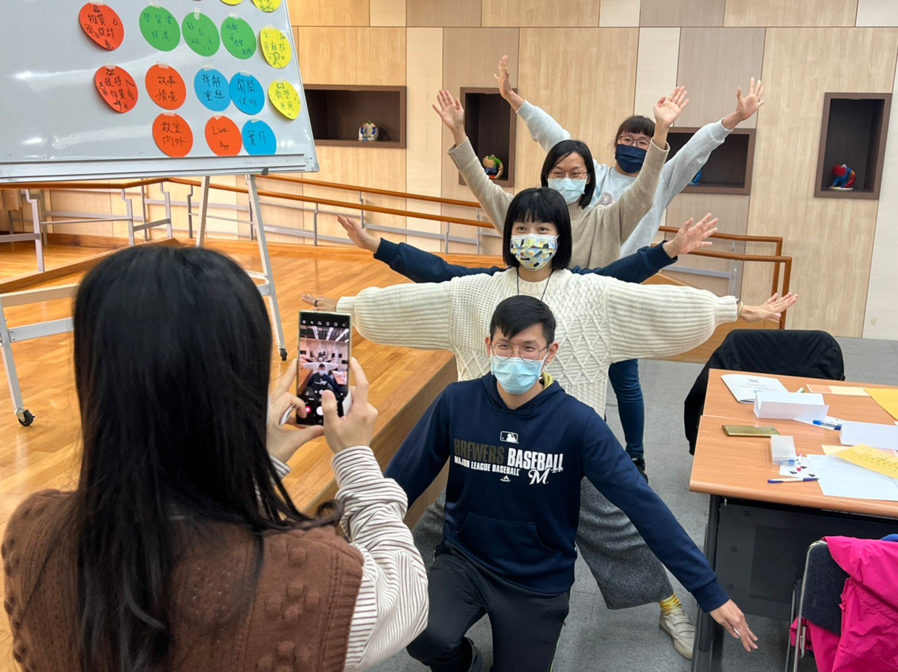
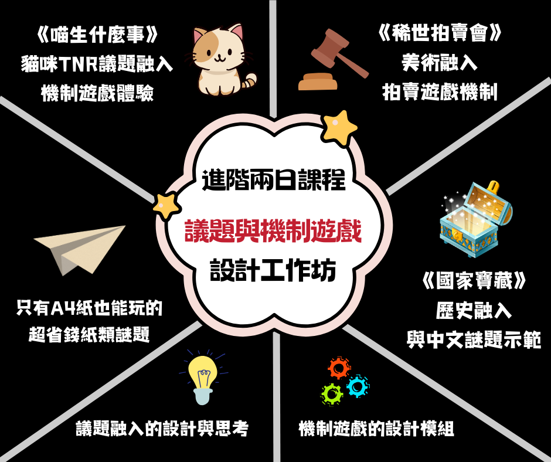
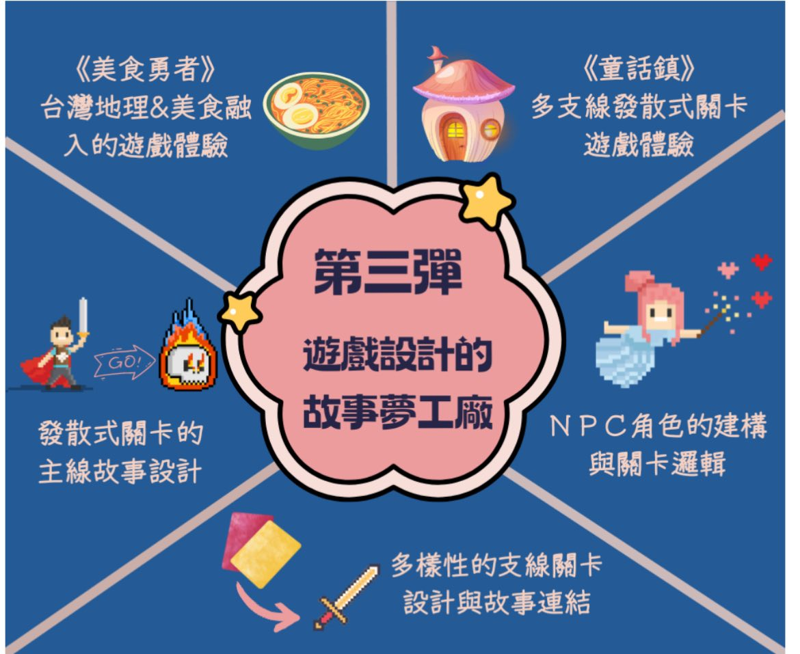
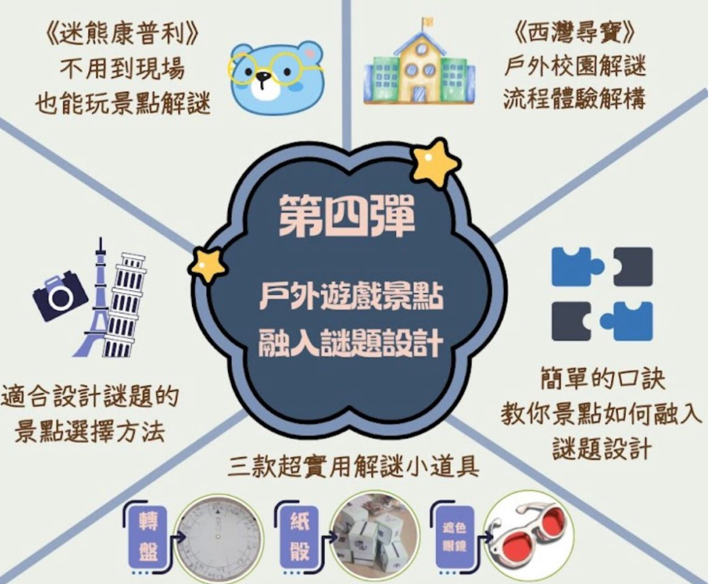

我們深信，好的遊戲設計不僅是娛樂，更是強大的教育工具。透過獨創的五大架構，帶領學員一步步掌握遊戲設計的魔法。
建立謎題資料庫
親自跑關玩實境
小組設計與回饋
拆解謎題與關卡
每一次的工作坊都是一場充滿笑聲與腦力激盪的冒險。來看看老師們在現場熱烈討論、親手製作解謎道具的精彩瞬間！

小組腦力激盪

實體道具手作體驗

議題融入設計

走出戶外！實境跑關

數位工具結合運用

好玩的教育遊戲設計
針對不同需求，我們提供多樣化的學習方案，無論是個人進修或學校機關包班，都能找到最適合的魔法課程。
帶您從新手入門到戶外實戰！我們將實境解謎設計拆解為四大階段，透過經典教案體驗與實作，讓您循序漸進掌握遊戲化教學的魔法。
解謎教學設計 ✕ 我的教室是密室
議題與機制 ✕ 議起玩實境

發散設計與敘事結構

戶外導覽與道具應用實務

【教學】與【遊戲】雙專業完美結合。團隊充滿活力、幽默且具備豐富實戰經驗。
實境遊戲培訓師
實境遊戲設計師
團隊創意活水
教育好奇寶寶
「讓教室變密室，把學習變冒險！」
備課卡關了嗎？學生總是興致缺缺？交給我們！這不僅是一場研習，更是一場顛覆傳統的教育體驗。
我們集結了專業密室設計師與第一線教育工作者，帶你親身感受「有笑、有意思、有效又有意義」的沉浸式教學。
準備好解鎖你的教學超能力了嗎？今年，我們一起玩翻教育！
2022 第二屆實境遊戲教育年會